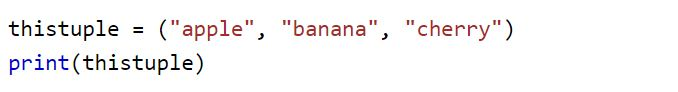

Tuple
Tuples are used to store multiple items in a single variable.
Tuple is one of 4 built-in data types in Python used to store collections of data, the other 3 are List, Set, and Dictionary, all with different qualities and usage.
A tuple is a collection which is ordered and unchangeable.
Tuples are written with round brackets.
